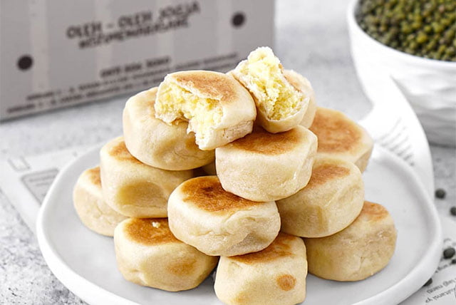

Indonesia, dengan kekayaan budaya dan sejarahnya yang panjang, memiliki khazanah kuliner yang tak ternilai. Lebih dari sekadar hidangan lezat, makanan Indonesia menyimpan jejak interaksi budaya yang menarik untuk ditelusuri. Akulturasi, atau percampuran budaya, telah memberikan warna dan cita rasa unik pada masakan Indonesia
1. Bakso

Siapa yang bisa menolak kelezatan bakso? Makanan berkuah dengan bola daging yang kenyal ini ternyata berasal dari Tiongkok. Kata "bakso" sendiri diambil dari kata "bak" (daging) dan "so" (makanan) dalam bahasa Hokkian. Namun, bakso di Indonesia mengalami penyesuaian, terutama dalam penggunaan daging sapi sebagai bahan utama, menyesuaikan dengan mayoritas masyarakat yang beragama Islam.
2. Bakpia
Oleh-oleh khas Yogyakarta ini juga memiliki akar dari Tiongkok. Berasal dari dialek Hokkian "Tou Luk Pia" yang berarti kue berisi daging, bakpia awalnya diisi dengan daging dan minyak babi. Namun, seiring waktu, isian bakpia di Indonesia mengalami modifikasi dan variasi, seperti kacang hijau, cokelat, keju, dan lainnya.
3. Bakwan

Camilan renyah yang sering disebut "bala-bala" di Jawa Barat ini juga merupakan hasil akulturasi budaya Tionghoa. Kata "bakwan" berasal dari bahasa Tiongkok, "bak" (daging) dan "wan" (bola). Awalnya berupa bola daging, bakwan di Indonesia mengalami adaptasi dengan menggunakan sayuran karena harga daging yang relatif mahal.
4. Nasi goreng

Hidangan yang menjadi favorit banyak orang ini juga memiliki sejarah panjang dalam akulturasi budaya. Nasi goreng diperkirakan berasal dari Tiongkok, muncul dari kebiasaan masyarakat Tionghoa yang tidak suka makan nasi dingin. Mereka kemudian menambahkan bumbu dan bahan lain untuk menciptakan nasi goreng yang lezat dan bernilai gizi.
5. Semur
Masakan yang kaya rempah dan rasa manis ini ternyata dipengaruhi oleh kuliner Belanda. Kata "semur" berasal dari bahasa Belanda "smoor" yang berarti masakan yang direbus dengan tomat dan bawang dalam waktu lama. Semur di Indonesia kemudian berkembang dengan menggunakan kecap manis dan rempah-rempah khas Nusantara.